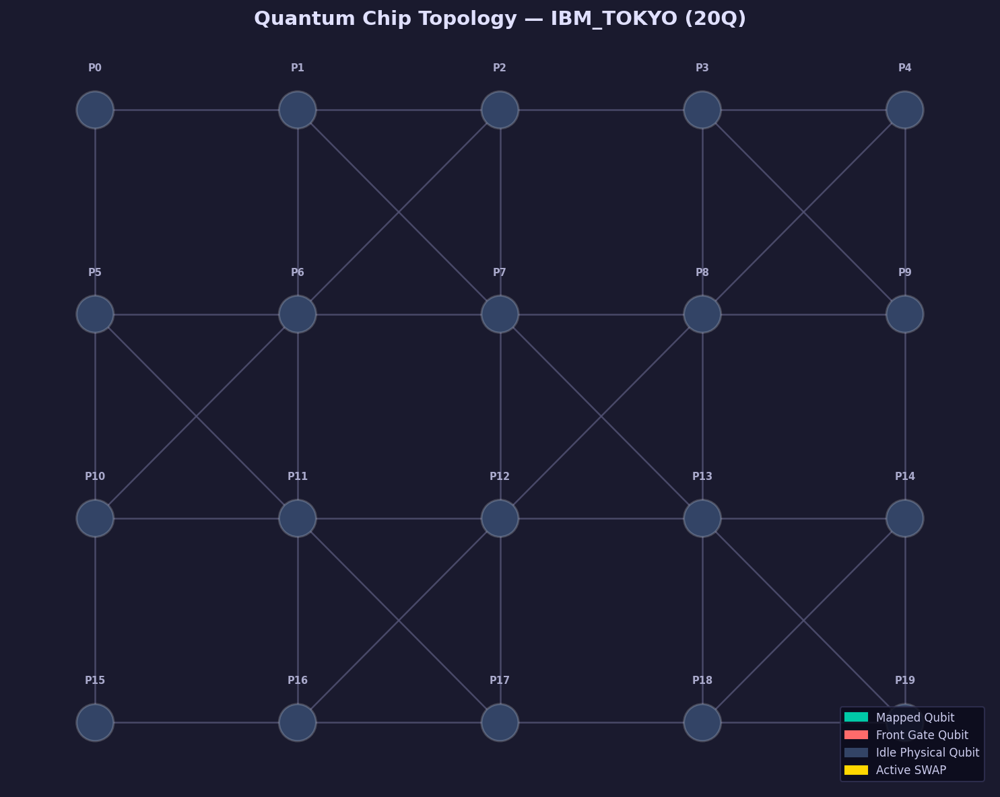
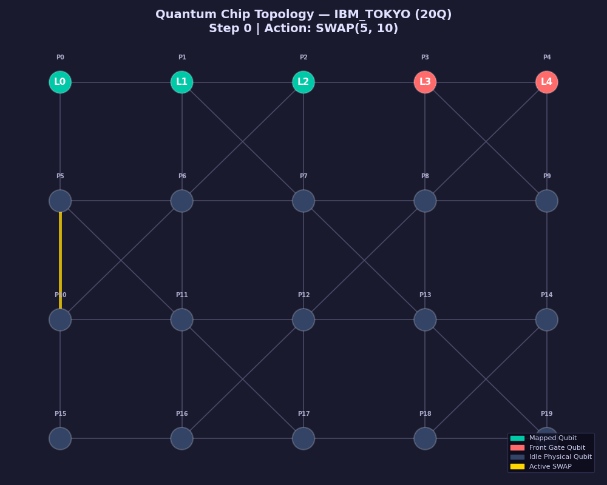
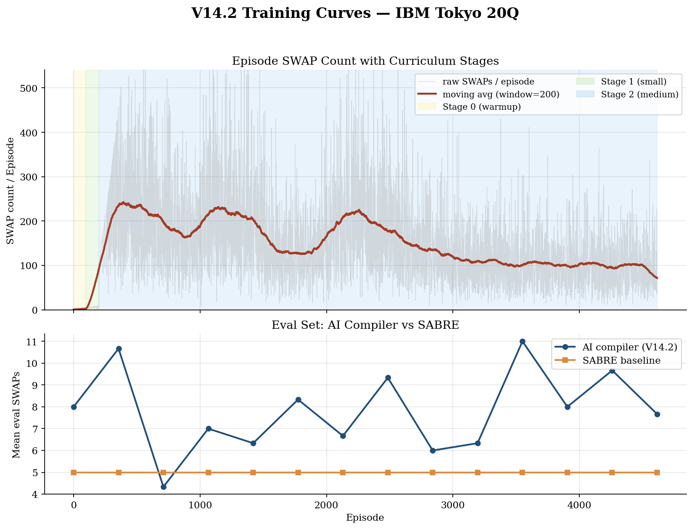
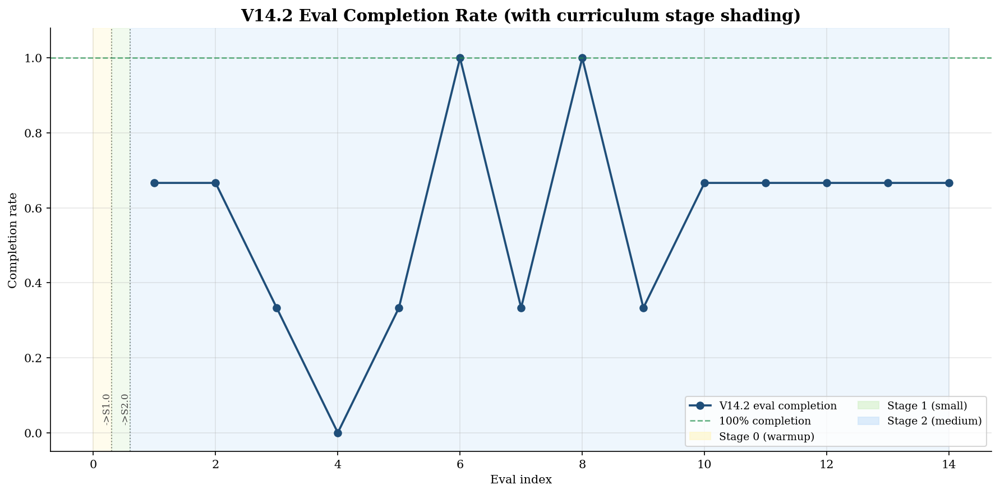

Quantum circuit routing lab
Compiler playground for SWAP-aware routing.
This project maps logical quantum circuits onto constrained hardware topologies such as IBM Tokyo 20Q. You can run SABRE as the reliable baseline, inspect an experimental AI router, and reproduce the latest V14 evaluation without a GPU.
Try a sample
Run the same workflow locally
qcompiler compile examples/qft5.qasm --topology tokyo --backend sabreQASM preview
Result explanation
Hardware view
The current public evaluation targets IBM Tokyo 20Q. The static page uses checked-in assets, so the project remains inspectable directly from GitHub Pages.


V14 P1 benchmark
These rows come from models/v14_tokyo20/eval_report_mqt.json.
The main average excludes outliers and only treats completed AI routes as
comparable.
| Circuit | Qubits | SABRE SWAP | AI status | AI SWAP | Ratio |
|---|
Local API and CLI
GitHub Pages runs in static mode. Start the optional FastAPI server locally when you want the page to call the compiler backend.
1. Install
Install the package in editable mode with the existing virtual environment.
pip install -e .[dev]2. Run SABRE
Compile a checked-in example without requiring the AI checkpoint.
qcompiler compile examples/qft5.qasm --topology tokyo --backend sabre3. Start API
Enable live mode for this page on your machine.
uvicorn src.server.app:app --reload --port 8765Training evidence
The model history is useful as engineering evidence, but the public result is still benchmark-driven: the current AI checkpoint does not beat SABRE.


Roadmap
The project is mature enough to run and inspect, while the research line remains explicit about what still needs work.
- Keep SABRE as the stable public baseline and reproducibility anchor.
- Use V14 results as a transparent failed checkpoint, not a product claim.
- Continue V15 as bounded MCTS + GNN research with parallel self-play and batch inference.
- Promote a new AI checkpoint only after it completes the benchmark and beats SABRE on comparable rows.